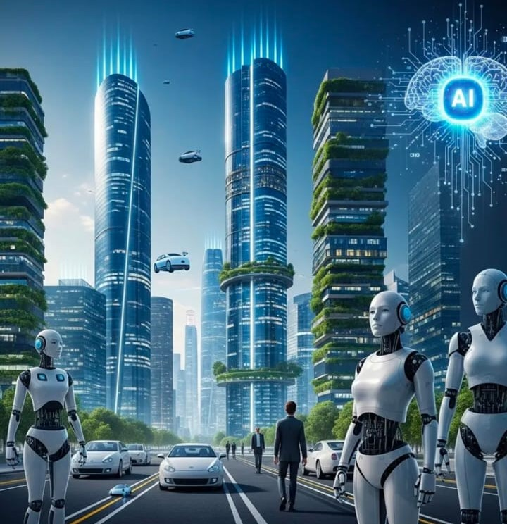

Artificial Intelligence (AI) is the technology that allows machines to think and learn like humans.
⏺️Introduction to Smart Cities A smart city is a modern urban area that uses advanced technologies such as the Internet, sensors, and data systems to improve the quality of life for citizens. It uses digital technology and data to manage resources like transportation, energy, water, and public services more efficiently. The main goal of a smart city is to make life easier, safer, and more sustainable for people.
⏺️Technologies Used in Smart Cities